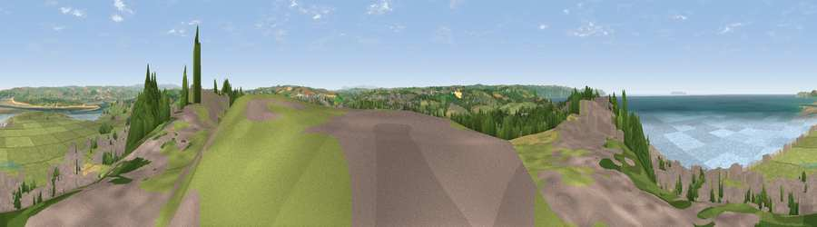

Viewpoint near Westward Ho!
#2485 in England · top 8% of its area beats it · near Westward Ho!The view, rendered

A 360° render of this exact spot computed from the terrain model, tree cover and land cover — summer colours, afternoon light, calibrated against photographs of famous viewpoints. Real trees, hedges and buildings will differ in detail.
The panorama
Grey silhouette: terrain skyline in each direction (720 bearings, Earth curvature and refraction included). Dashed green: skyline with trees (+15 m) and buildings (+8 m) as obstacles. Blue strip: how far the ground is visible on each bearing.
Where the view opens
Wedge length = distance to the farthest visible ground on that bearing (vegetation-aware). Rings at 10, 25 and 50 km.
What fills the view
33% built-up · 32% grassland · 17% water · 9% woodland · 8% cropland ·
Angular shares of the visible panorama (visual magnitude), not map area. Landscape diversity 0.66 (0–1 Shannon).
Key numbers
More beautiful places nearby
The staircase of upgrades: each row has a higher view potential than everything closer. Driving times are estimates from straight-line distance, calibrated against real road routing — check an actual route before setting out.
| Place | Direction | Drive | Score |
|---|---|---|---|
| Viewpoint near Westward Ho! | W · 2 km | ~5 min | 76.2 |
| Viewpoint near Abbotsham | SW · 5 km | ~10 min | 76.8 |
| Babbacombe Hill | SW · 5 km | ~12 min | 78.7 |
| Viewpoint near Abbotsham | SW · 5 km | ~12 min | 79.9 |
| Viewpoint near Parkham | SW · 7 km | ~15 min | 81.7 |
| Viewpoint near Bucks Mills | SW · 8 km | ~16 min | 84.0 |
| Viewpoint near Woolacombe | N · 13 km | ~24 min | 84.7 |
| Viewpoint near Combe Martin | NE · 24 km | ~39 min | 86.9 |
51.03795, -4.22892 · source: screening · position refined by local search. Computed location — check access rights before visiting.